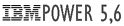

|
ADMINISTRATION
|
OUTILS
CONNEXES
|
- UNIXS :
AIX 5.3, 6 - SOLARIS 9,10
- LINUX RedHat 4,5 -RHN (+REDHAT NETWORK STALLITE 5.2) - HP-UX 10.20, IRIX, MACOS 10
-
V I R T U A L I S A T I O N :
VSPHERE 4.0 ESX/ESXi
 P-SERIES
(Power6): Partitionnement logique (LPAR) & VIO-SERVEUR
|
-
Intégration
de systèmes : OS, Outils systems et Middleware -
Qualification/Validation
: Mise en place des Middleware & configuration Progiciels. -
Websphère, Weblogic
: Déploiements applicatifs -
Shells & Prog.Tools : ShellScripts , AWK
,SED, VI, RegExp -
Logical Volum Manager : Véritas ,
HP -
Annuaires
: NIS, AD -
Surveillance Systèmes : Big Brother, Nagios -
Restauration Time Navigator, TSM Sauvegarde & restauration Netbackup 7 (UNIX) -
Administration Microsoft : Active
Directory, Hyena, SU, Ghost. -
Langage SGBD : SQL,
SQLplus, PL/SQL. (Pratique de base) -
WebScript : PHP. (Pratique de base) -
Dev Data Base :
Méthode Merise, Méthode objet UML. -
Logiciel de Conduite de projet :
MS-Project. -
Edition HTML : Dreamweaver, KompoZer, FrontPage -
Bureautique : Word,
Excel, Outlook -
Multimédia
: TonkyMedia (Serveur Upnp) - QNAP (NAS)
|
Samba (Pratique de base) Apache (Pratique de base) CITRIX METAFRAM (Pratique de base) Filer NetApp (Administration)
|
| Réseaux / protocoles /
Services / Sécurité |
-
TCP/IP : DHCP,
Routage statique et RIP, SSH V2, HTTP (serveur
Apache et IIS), DNS (BIND), FTP (client/serveur),
telnet, rlogin, rsh, rcp, etc… VLAN, bonding Linux, NTP, NIS+ - SAN SWITCH : BROCADE - ZONING double fabric
- Transfert de fichiers / flux datawerhouse : CFT/XFB monitor de AXWAY
-
Protocole de partage de données :
CIFS/NFS
-
Couches physiques : RJ45,
câble coaxial pour Ethernet et 802.3. Wifi 802.11g. Fibre Channel
-
Firewall : Équipement
Lucent Technology - Firewalls sous micro noyau linux.
-
Windows NT: (NT-TCP/IP,
WINS, netbios)
-
SECURITE :
SSH V2, sudo, SELinux
|
-
Acquisition numérique :
Scanning et prise de vue numérique
professionnel.
-
Périphériques d’impression :
Gamme Epson pro (Jet d'encre) + Sublimation thermique + Rip (Fiery + Best +
Arlequin).
-
Traitement de l’images 2D:
Maniement de Photoshop
- Binuscan
-
Gestion de couleur:
Expert en création et exploitation de profils ICC.
-
Connaissance approfondie de l’environnement pré-pesse.
(Voir experiences : Crosfield, Scitex,
Thetascan, MCI...)
-
Processus d'impression : Sous Windows,
Unix, Citrix Métafram.
|